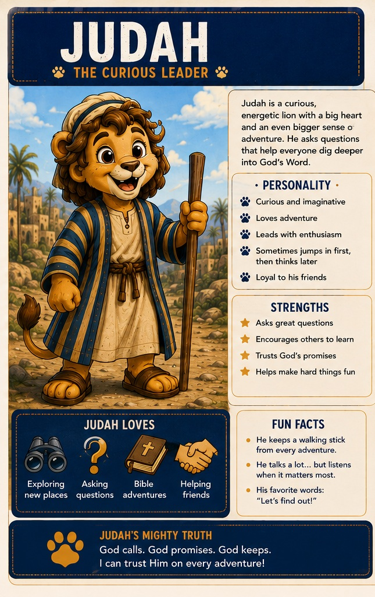
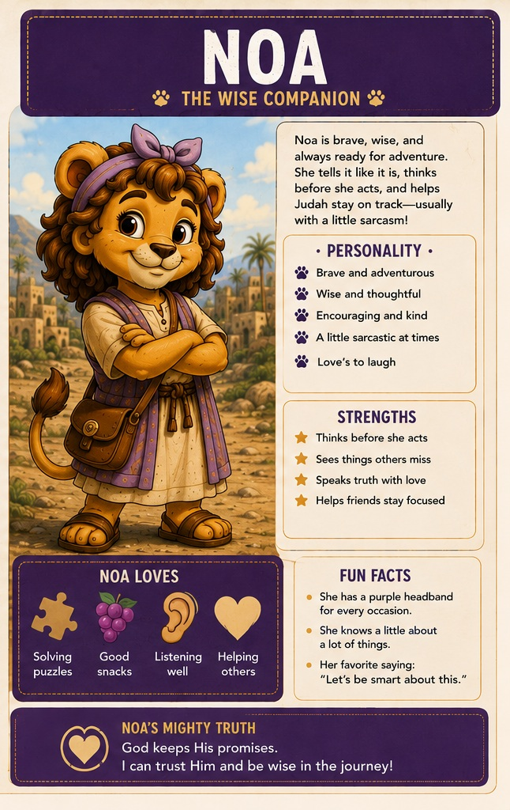

Judah
Curious, energetic, and always ready for an adventure. Judah asks the questions kids are already thinking—and sometimes jumps in before he has the whole plan.
CuriousImaginativeAdventurousLoyal
Join Judah and Noa on story-driven learning adventures that help kids ask big questions, explore Scripture, and discover how God's promises unfold through one mighty story.
Explore the First Course Meet Judah & Noa
One Bible. One Story. All About Jesus.
A six-week journey from Abram to Isaac built around one big question: Can God be trusted to keep His promises?
From Abram to Isaac
Abram → Promise → Isaac → Israel → Jesus → Nations
“God calls. God promises. God keeps.”
Six story-driven video lessons.
✓ Scripture-centered teaching
✓ Judah + Noa as animated guides
✓ Fully animated / CGI presentation planned
✓ Family discussion + printable curriculum
✓ “Follow the Promise” Bible connections
Two very different personalities. One great adventure through God's Word.

Curious, energetic, and always ready for an adventure. Judah asks the questions kids are already thinking—and sometimes jumps in before he has the whole plan.

Brave, encouraging, cautious, and wise—with just enough sarcasm to keep Judah grounded. Noa loves to laugh, notices details others miss, and helps the team think before they leap.
Judah brings curiosity and momentum. Noa brings wisdom, courage, encouragement, and a well-timed reality check. Together they explore Scripture, ask real questions, follow God's promises, and make hard ideas approachable for kids.